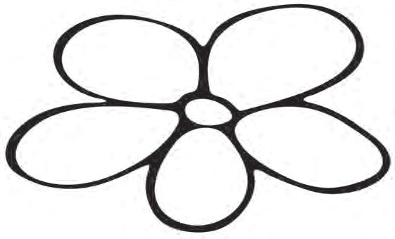
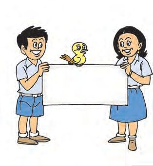

4
കൂ ുകൂടാം ഗവ
ൂൾ മു
ി ണ
ൽ.പി. എ .
ഗണിേതാ വം സ ാഗതം
4
കൂ ുകൂടാം ഗവ
ൂൾ മു
ി ണ
ൽ.പി. എ .
ഗണിേതാ വം സ ാഗതം


ഗണിതം
ാൻേഡർഡ് - III
ഗണിേതാ
വം
ബിബിയും കൂ ുകാരും ഗണിേതാ വ ിന് എ ിയേ ാ.
കൂ ുകാേര... എ ാ ാളും ക ുേപാകേണ...
ാൾ - 1 കൂ ി േനാ
ൂ... നിറം െകാടു
ൂ...
െപ ിയിൽ നി ് ര ് കാർെഡടു ൂ... തുക കണ ാ ൂ... പൂവിന് നിറം െകാടു
65 60
45
40
70
..... +
എനി ് കി ിയത്
..... =
70
.....
. = 40
... ..... + .
46
... = 60
. ..... + .
.... ..... + . = 65
+ ...
.. =
45
ൂ...


കൂ ുകൂടാം
േജാടിയാ
ാം
േജാടി
തുക
േജാടി
തുക
1+9
10
1 + ........
100
........ + 65
100
........ + ........ ........ + ........
10 10
........ + ........
10
........ + ........
10
100 തുകയായി വരു
േജാടികൾ ഇനിയുമു ക ുപിടി ാേമാ ?
60 + ........ 70 + ........ ........ + 45
േ ാ...
പൂർ
പ ിക ിയാ
ാം
100 100 100
ഞാൻ ക
ുപിടി ത്.
49 + 51 = 100 48 + 52 = 100 100 തുകയായി വരു
എ ാ േജാടികളും എളു ിൽ കെ കഴിയിേ ...
2 എ മാണ് ഒരു േജാടി. 100 തുകയായി വരു ഒരു േജാടി സംഖ കളാണേ ാ 80 ഉം 20 ഉം.
ാൻ
100 തുകയായി വരു എ ാ േജാടികളും ത ിൽ േചർ ് വര ൂ...
ആയിര
ിെ
േജാടികൾ
50 + 950 = 1000 150 + 850 =
40 41 42 43 44 45 46 47 48 49 50 51 52 53 54 55 56 57 58 59
250 +
= 1000 + 650 = 1000
450 +
47
= 1000

ഗണിതം
ാൻേഡർഡ് - III
ാൾ - 2 തുണി
500 രൂപയുെ
ര ുവ
ട
വില േനാ ി നി ളും കണ ാ ി േനാ ൂ..
ിൽ നമു ് ഏെതാെ ൾ വാ ാം?
ബി ് 1
ബി ് 2
ഇനം
വില (രൂപ)
ഇനം
വില (രൂപ)
........
........
........
........
........
........
........
........
ആെക
500
ആെക
500
48

കൂ ുകൂടാം
ാൾ - 3 സംഖ ാസൗ ര ം ഈഅ ൾ ഒരു തവണ ഉപേയാഗിെ ഴുതാവു സംഖ കൾ ഏെതാെ യാണ് ? ഇതിൽ ഏ വും വലിയ സംഖ ഏതാണ് ? ഏ വും െചറിയ സംഖ േയാ ? ര ് സംഖ കളും കൂ ിയാെല കി ും ? എനി
1
3 2
് കി ിയ സംഖ കൾ
എനി ് കി ിയ വലിയ സംഖ
െചറിയ സംഖ
തുക എെ
ഊഹം
നും
നും ഇടയിൽ.
കൂ ിയേ ാൾ കി ിയ സംഖ 2, 3, 4 എ
ീഅ ഉപേയാഗി ാേലാ ?
3, 4, 5 എ
ൾ
ീഅ ൾ ഉപേയാഗി ് എഴുതിയാേലാ ?
വലിയ സംഖ
വലിയ സംഖ
െചറിയ സംഖ
െചറിയ സംഖ
കൂ ിയേ ാൾ കി ിയ സംഖ
കൂ ിയേ ാൾ കി ിയ സംഖ
49

ഗണിതം
ാൻേഡർഡ് - III
കി ിയ തുകയിെല അ
ിയ െച ാെത ഉ
ളുെട
േത കത.
രം എഴുതൂ...
കെ
310 + 230
=
317 + 230
=
315 + 231
=
308 + 232
=
ാൾ - 4
ിയ രീതി പറയൂ... 540
കൂ ുകൂടാം... കളി
ാം...
സ ാഗതം ! വ വർെ ാം സ ാനെ ാതിയു ്.
ഹായ് ! കളിേനാ ുകൾ
ബിബി ും െജബി ും കി ിയ േനാ ുകൾ േനാ ുകൾ/ നാണയ ൾ
ബിബി
എ
ം
് കി ിയത് തുക
െജബി
എ
് കി ിയത് ം തുക
0
100
2 0
50
4
0
20
3
0
10
4
5
5
0
2
ആെക
ആെക
200
2
50


കൂ ുകൂടാം
ബിബി
് കി ിയത്
െജബി
് കി ിയത്
ി
ര ു േപരുെടയും കൂടി തുക 1000 ആകുവാൻ
ആെക 1000 രൂപ ആകുവാൻ
ഇനി േവ
ത്.
നി ളും കളി ൂ... പ ികെ ടു തുക കണ ാ ൂ... േനാ ുബു ിൽ െച േണ...
50 രൂപ വെര
ാളിൽ നി ും കി ും.
ാൾ - 5
കളി
ാം...രസി
312
146
205
320
148
237
419
400
315
236
226
145
536
325
200
130
ാം... ര ് തവണ േടാ ൺ എറിയൂ... കി ിയ സംഖ കളുെട തുക കണ ാ ൂ.
ആദ തവണ േടാ ൺ എറി േ ാൾ ബിബി ും െജബി ും ഒേര സംഖ കളാണ് കി ിയത്. ര ുേപരും ഉ രം ക ുപിടി രീതി േനാ ൂ...
കി ിയ സംഖ കൾ : 237, 146 ബിബിയുെട രീതി.
െജബിയുെട രീതി.
237 + 146 = 200 + 30 + 7 + 100 + 40 + 6
237 = 230 + 7
= 200 + 100 + 30 + 40 + 7 + 6
146 = 140 + 6
= 300 + 70 + 13
237 + 146 = 370 + 13 = 383
= 300 + 83 = 383
51

ഗണിതം
ാൻേഡർഡ് - III
പ
നൂറുകൾ
ുകൾ
ഒ ുകൾ
2
3
7+
1
4
6
7 ഉം 6 ഉം
കൂ ിയേ ാൾ 13 കി ി. 13 െല 10, പ ുകളുെട ാനേ ് മാ ി.
1 3
8
3
237 േനാട് 146 കൂ ിയാൽ 383 കി ും. 236 േനാട് 148 കൂ ിയാൽ എ കി ും ? മന ണ ായി പറയൂ... 536+ 300
മിൻഹ ് കി ിയ സംഖ കൾ 536, 325 എ ിവയാണ്. തുക കണ ാ ിയത് േനാ ൂ.
836+ 20
536 = 500 + 30 + 6
856+ 5
325 = 300 + 20 + 5 536 + 325 = 800 + 50 + 11 = 861
861
നമു ും േടാ ൺ എറി ് കളി ാം. ഒരാൾ ് ര ് തവണ എറിയാം. ഓേരാ തവണയും കി ിയ സംഖ കളുെട തുക കണ എനി
ര
ാ
ുക.
് കി ിയ സംഖ കൾ.
ഒ ാം കളി :
തുക കണ
ാ
ിയ രീതി
ാം കളി :
തുക കണ
52
ാ
ിയ രീതി

കൂ ുകൂടാം
വ െന കെ
ൂ... 164 എ
െനയാണ്
കി ിയത് ?
590 164 199
146
99
65
199 േനാട് 1 കൂ ിയാൽ വ ന് വരു മാ ം എ ാണ് ? ിയ െച ാെത
പറയേണ...
146 േനാട് 1 കൂ ി േനാ
ൂ... വ െ ാന ് എ യായിരി ും ? ിയ െച ാെത പറയേണ...
199 േനാട് 2 കൂ ി േനാ
ൂ... വ െ ാന ് എ യായിരി ും ? താെഴയു 4 സംഖ കേളാടും ഒ ് വീതം കൂ ിയാൽ വ ൻ എ കൂടും ?
എ
െനയാണ് കണ 53
ാ
ിയെത ് പറയൂ.

ാൻേഡർഡ് - III
ഗണിതം
ാൾ - 6
സംഖ കളുെട അ 8
1
7
ൂ... ൾ
2
ഓേരാ നിരയിെലയും മൂ ു സംഖ കൾ കൂ ി േനാ ൂ... േകാേണാടുേകാണു മൂ ു സംഖ കളും കൂ ൂ... തുകയുെട േത കത എ ാണ് ? പറയൂ...
ിക ചതുരം
23 മുതൽ 31 വെരയുളള
9
മാ
ആദ വരിയിെല സംഖ കൾ കൂ ി േനാ അേത തുക കി ു രീതിയിൽ മ ് കള പൂർ ിയാ ൂ...
6
3
ുതേലാകം
സംഖ കൾ എഴുതി മാ ിക ചതുരം പൂർ ിയാ ൂ...
ചതുര ളിെല സംഖ കൾ വരിയായും നിരയായും േകാേണാടുേകാൺ കൂ ിയാലും ഒേര തുക കി ും.
23 25
ഇതിൽ നി ൾ ് ഏതാണ് എളു മായി േതാ ിയത് ? 2 6 +
2 6 +
3 1
3 1 + +
26
31
24
ഓേരാ േജാടിയിെലയും വലിയ തുക ഏെത ് ച ാതിേയാട് പറയൂ.
2 4
2 4
54
56 + 75
64 + 58
65 + 57
46 + 85


കൂ ുകൂടാം
ത
ീർ പ ൽ ഗണിേതാ വ ിന് നാല് ദിവസ ളിലായി വിതരണം െച കുടിെവ ിെ അളവ് േനാ ൂ...
അളവ്
ദിവസം
ഒ ്, ര െകാടു
് ദിവസ ളിൽ ആെക െവ ിെ അളവ്. ലി ർ
നാല് ദിവസവും കൂടി എ െവ ം ഉപേയാഗി ു ?
1
437
2
524
3
581
4
448
മനഃ
മൂ ്, നാല് ദിവസ ളിലായി െകാടു െവ ിെ അളവ്. ലി ർ ലി ർ
(ലി റിൽ)
ണ
്
ഓേരാ ദിവസവും ഉപേയാഗി െവ ിെ അളവ് 440, 520, 580, 450 ലി ർ വീതമായിരുെ ിൽ ആെക എ ലി ർ െവ ം േവ ിവരുമായിരു ു ? മനഃ ണ ായി െച ൂ...
കതിരണി ൂളിൽ നി ും ഗണിേതാ വ ദർശനം കാണാൻ 281 കു ികളും അറണി ൂളിൽ നി ് 348 കു ികളും എ ി. ആെക എ േപരാണ് ദർശനം കാണാൻ എ ിയത് ?
55

ാൻേഡർഡ് - III
ഗണിതം
ാൾ - 7 പാേ ണുകളുെട േലാകം ദർശനഹാളിെ
ചുവരിൽ നി
പാേ ണുകൾ പൂർ
ിയാ
ൾ
ും പാേ ണുകൾ എഴുതാം.
ൂ...
111
+
111 = 222
100
+ 10
+ 1
=
111
222
+
222 =
200
+ 20
+ 2
=
222
+
=
+
+
=
+
=
+
+
=
+
=
+
+
=
+
=
+
+
=
+
=
+
+
=
+
=
+
+
=
=
+
+
=
999
+
999
ഞാൻ ത ാറാ
ിയ പാേ ൺ.
56


കൂ ുകൂടാം
പ
ുരു
് ഗണിത ദർശനം കാണാെന ു എ ാവർ ും ഫലr ൈ െകാടു ു ു ്. നടാം... പരിപാലി
ൈതകൾ
ഒ ാം ദിവസം െകാടു ത്
ര
ാം ദിവസം െകാടു ത്
െന ി
238
241
മാവ്
138
152
ാവ്
236
166
േപര
175
246
• ഏ വും കൂടുതൽ െകാടു • ആെക എ
ത് ഏതു ൈത ആണ് ?
മാവിൻൈതയാണ് െകാടു
• ഇതുേപാെല കൂടുതൽ േചാദ
ത് ?
ൾ ത ാറാ
57
ൂ...
ാം.
ആെക


ാൻേഡർഡ് - III
ഗണിതം
വിലയിരു
ൽ
വർ
ന
ൾ
1. ഗണിേതാ
മ
വ ാളിേല ് ബിബിയുെട ാടികളുെട എ ം േനാ ൂ.
ൂളിെല കു ികൾ േശഖരി
ാസ് 1
ാസ് 2
ഡിവിഷൻ
എ
A B
ം
ഡിവിഷൻ
എ
275
A
300
325
B
225
ാസ് 3
A. ഓേരാ
B. ഏത്
C. മ
ാസ് 4
ഡിവിഷൻ
എ
A B
ം
ഡിവിഷൻ
എ
375
A
245
215
B
350
ാസിൽ നി ും േശഖരി
ആെക മ
ാസ് 1
ാസ് 2
ാസ് 3
ാസ് 4 ാടി കി ിയത് ?
ാസ്
ം
എ ം ആേരാഹണ
D. 1120 കി ാൻ ഏതു ര
്
മ
ം
ാടികൾ. ി
ാസിൽ നി ാണ് കൂടുതൽ മ
ാടികളുെട എ
ം
ിെലഴുതൂ...
ാസിെല മ ാടികളുെട എ ം കൂ ണം ? =
+
58
1120

കൂ ുകൂടാം
E.
F.
ാസിെലയും കൂടി മ ാടികളുെട എ േ ാട് 5 കൂ ിയാൽ 1200 കി ും ഏെതാെ യാണ് ആ ാസുകൾ? ശരിയായ ഉ രം ടിക് () െച ുക. ര
്
A.
ാസ് 1,
ഓേരാ
ാസ് 2
B.
ാസിൽ നി ും േശഖരി
ആകണെമ ിൽ ഇനി എ ാസ്
ാസ് 2,
േശഖരി
ാസ് 3
മ
കൂടി േവ
മ ാടികളുെട എ ം
C.
ാസ് 1,
ാടികളുെട എ
ം 1000
ിവരും ? 1000 ആകാൻ േവ
എ
ം
1 2 3 4
2. പാേ ൺ തുടരാേമാ ? A.
140, 260, 380, ..................., ..................., ...................
B.
25, 225, 425, ..................., ..................., ...................
C.
600, 610, 630, 660, ..................., ...................
D.
200, 310, 430, ..................., ..................., ...................
E.
0, 115, 230, 345 ..................., ...................
ഇവയിൽ 200 വീതം കൂടു
പാേ ൺ ഏതാണ് ?
59
ാസ് 4

ഗണിതം
3.
ാൻേഡർഡ് - III
മു ണി ൂൾേ ാറിൽ ഒ ാംദിവസം 847 രൂപ കി ി. ര ാംദിവസം അവർ ് 500 െ യും 100 െ യും ഓേരാ േനാ ുകളും 50 െ 5 േനാ ുകളും 2 രൂപയുെട ര ് നാണയ ളുമാണ് കി ിയത്. A.
ഏത് ദിവസമാണ് കൂടുതൽ കി ിയത് ? എെ
ഊഹം
എെ
ിയ
എെ ഉ B.
ര
രം
ു ദിവസവും കൂടി ആെക എ
എെ
ഊഹം
ഞാൻ കണ
4.
ചുവെട നൽകിയ A. 524 + 312
5.
രൂപ കി ി ?
നും ാ
നും ഇടയിൽ.
ിയത്
ിയകളിൽ ഏതിെ
B. 227 + 519
ഉ
രമാണ് 846?
C. 546 + 400
D. 329 + 517
എെ ഉ
രം
മന
ണ
ായി ഉ
A.
550 + 450 = ...................... B. 675 + 425 = ......................
C.
730 + 520 = ...................... D. 890 + 460 = ......................
E.
436 + 324 = ...................... F.
രെമഴുതുക. കണ
60
ാ
ിയ രീതി പറയുക.
253 + 147 = ......................